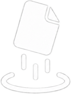

plopDrop it on the shelf. Grab it on any device nearby.
plop is a shelf every device on your Wi-Fi can see. Put a file, a folder, a screenshot or some text on it, and it waits there for two minutes for whoever needs it. No account, no cloud, no pairing.
get plop
plop for Mac
download
plop for Windows
download
plop for Linux
download
plop for Android
download
plop on iPhone
how
Free and open source. Not signed by Apple or Microsoft yet, so each system asks once; setup shows where to click.
setup
- Open
plop-macos.dmgand drag plop into Applications. - On the first open macOS can't check who made it. Click Done, then System Settings › Privacy & Security › Open Anyway.
- Let plop find devices on your local network when it asks.
- Run
plop-windows-setup.exe. When SmartScreen steps in, pick More info › Run anyway. - Say yes to the admin prompt: it opens the firewall so your other devices can reach this PC.
Ubuntu 24.04, Debian 13 or newer, x64:
sudo apt install avahi-daemon
tar xzf plop-linux-x64.tar.gz && ./plop/plop- Open plop on a Mac or PC on the same Wi-Fi and click its settings.
- Scan the code there with your iPhone's camera.
- In Safari, tap Share › Add to Home Screen. plop opens from its own icon from then on.
- Download
plop-android.apkon the phone and open it. - Allow your browser to install apps, and pick Install anyway if Play Protect asks.
⌃⌥Psnip part of the screen onto plop
⌃⌥Vplop what's on your clipboard
⌃⌥Gcopy the newest thing another device sent
Ctrl⇧Altthe same letters on Windows and Linux